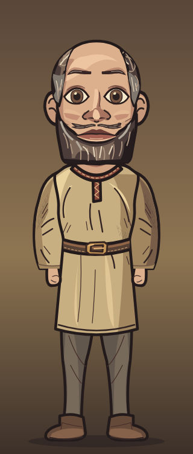
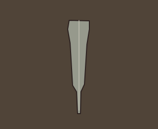
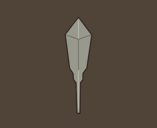
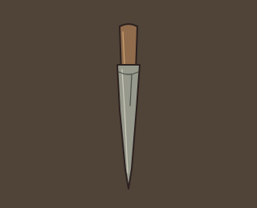
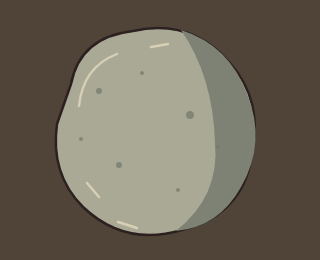

По комплекту
auto
32 × 32
Без отдельной детали
none 32 × 32
наконечник стрелы двушипный (гарпунный)
wp_ah_barbed 32 × 32

Лондон, XIII–XIV века; западноевропейская втульчатая головка с обломанными зазубринами не подтверждает русский черешковый гарпунный вариант.
тупой наконечник стрелы (томар) костяной или деревянный
wp_ah_blunt 32 × 32

XV – начало XVI века, Городок под Нижним Новгородом; предмет позднее целевого периода, хотя томары в Новгороде известны с X до начала XVI века.
костяной наконечник стрелы
wp_ah_bone 32 × 32

Китай; датировка в доступной карточке не указана, изображено костяное острие с небольшим выступом, а не предмет новгородского происхождения.
наконечник стрелы широколезвийный охотничий, срезень
wp_ah_broad_hunting 32 × 32

XIII–XIV века, селище Яковлевское-3 в Ярославской области; на фото узкий вытянутый срезень, а не широкий профиль из названия вещи.
наконечник стрелы листовидный
wp_ah_leaf 32 × 32

XV век, городище Городок в Нижнем Новгороде; снимок показывает набор разных форм и относится к более позднему времени.
наконечник стрелы черешковый ромбический
wp_ah_rhomboid 32 × 32

X–XII века, Рюриково городище; находка старше игрового периода, но форма черешкового ромбовидного пера совпадает.
наконечник стрелы втульчатый бронебойный
wp_ah_socketed_ap 32 × 32

Новгород, XIII в.; музейный предмет втульчатый, но бронебойность и гранёная форма источником не установлены.
наконечник стрелы черешковый узкий бронебойный (гранёный)
wp_ah_tanged_ap 32 × 32

Рюриково городище, X–XII вв.; находка ранняя, а точное соответствие узкому гранёному типу 1230 года не установлено.
подток копья
wp_spear_butt 32 × 32

Кембриджшир, Англия, средневековая дата не уточнена; конкретная форма не привязана к Новгороду.
ремонт доспеха: заплата кольчуги, связка колец и заклёпок, ремни обвязки
wp_armour_repair 32 × 32

XV в., Европа; изображён готовый ремонт кольчуги, а не переносимый набор колец, заклёпок и ремней Руси 1230 года. Ограничение источника: Источник XV века показывает готовый ремонт кольчуги, а не переносимый ремонтный набор.
навершие-втулка шлема (для еловца)
wp_helmet_finial 32 × 32

Деталь показана установленной на полном шлеме, а не отдельно.
Конская лицевая маска из Ромашек
wp_horse_armour 32 × 32

Только для исследования
Изображена только лицевая маска головы; источник не подтверждает полный конский доспех или покрытие всего коня. Ограничение источника: Ромашки, 1200–1240: показана только лицевая маска коня. Источник не подтверждает полный конский доспех.
каменное ядро метательной машины
wp_siege_stone 32 × 32

Монфор, Иерусалимское королевство, ок. 1250; каменный снаряд осадной машины из другого региона.